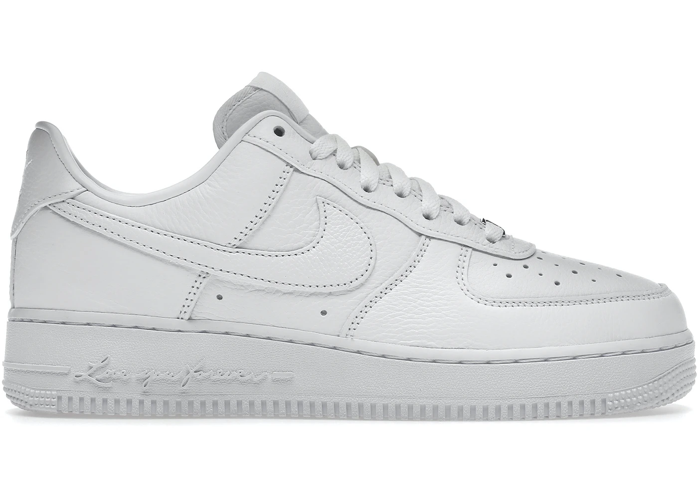

Nike Air Force 1 Low Drake NOCTA Certified Lover Boy


¡Se vendieron 59 en los últimos 3 días!
Última venta:
171€
Detalles del producto
| Estilo | CZ8065-100 |
| Color | WHITE/WHITE-COBALT TINT-WHITE |
| Precio retail | 160 US$ |
| Fecha de lanzamiento | 08/12/2022 |
| Accesorios incluidos | Cuentas alfabéticas |
Descripción del producto
Anteriormente denominados "Certified Lover Boy", a los nuevos AF1 premium inspirados en Drake ahora se les conoce como "Love You Forever". Este sentimiento se inspira en el libro infantil favorito de Drake al que se le han añadido detalles sutiles como las palabras "Love You Forever" en la entresuela, en el mismo color blanco. Otros elementos de diseño adicionales son agujetas personalizadas, el logotipo de NOCTA en el talón izquierdo y un nuevo patrón de perforaciones en la puntera.
La edición especial Drake Nike Air Force 1 Low se lanzó en diciembre de 2022 a un precio retail de $160 USD.